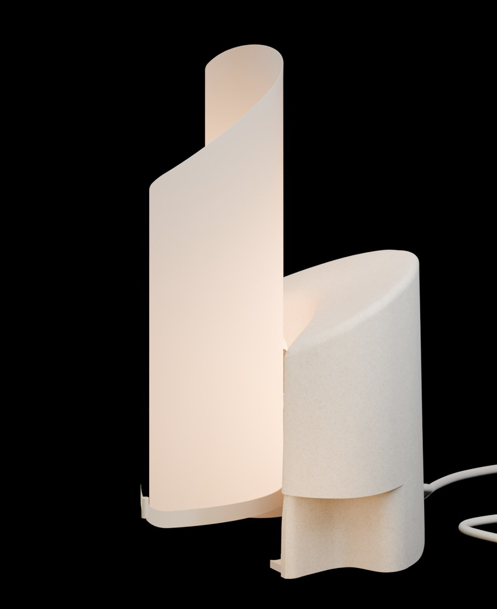

Forma i fire nivå
Hovudform. To enkeltkrumma flater kveila om kvarandre: eit lågt skal og eit høgt ark. Arket er det høgaste og ytste, så lampa er bygd rundt det som lyser.
Elementform. Skalet er ein vegg med avrunda rygg og skrått snitt over toppen. Arket er flatt før det blir bøygd, og har avrunda hjørne. Kveilen følgjer vekstmodellen til Raup (1961): radiusen veks med same faktor for kvar omdreiing.
Detaljering. Ei leppe 44 mm over bordet gjev ei skuggefuge ved foten. Arket står i eit spor ved rota. Éi leidning går ut ved foten, gjennom eit kabelauge. To skruar frå undersida løyser skalet frå botnplata.
Material. Skalet er pressa fiber frå eggebrett, matt og om lag 3 mm tjukt. Arket er optisk film frå ein kassert skjerm. Botnplata ber lys, kabel og ballast.
Mot verdiorda frå side 09
VARM
Arket er lyslekamen og det øvste i silhuetten. Lyset er 2700 K. Fiberen er matt. Manglar: messingpunktet.
MJUK
Krumma kontur i både skal og ark. Lyset kjem frå arket, ikkje frå eit punkt. Ope: lystapet gjennom arket er ikkje målt.
ENKEL
To former, éi leidning, teknikken gøymd i foten. Ope: i denne revisjonen sit ikkje betjeninga på lampa.
Mot Northern-reglane og poengskalaen frå side 09 · delvis tel som broten
R1 · primærformer
To former utan overgang, men kveilen er ikkje ein primitiv.
R2 · bereelement
Skalet ber arket. Veggen er loddrett, men snittet er skrått og foten har leppe.
R3 · lyskjelda
Kjelda står i foten og lyser på arket. Må prøvast frå 47 cm augehøgd.
R4 · éin farge
Éin farge i fiberen. Kontrasten kjem frå materialskiftet til arket.
R5 · messingpunkt
Ikkje i denne revisjonen. Punktet på ryggen finst som val i Formstudio.
Palett
Pressa fiber finst ikkje i materiala til Northern.
Proporsjon
20 cm høg. Bordlampene til Northern er 27 til 55 cm.
2 av 7. Bordlampene til Northern ligg på 4 til 7, og sona eg sette for briefen var 5 til 6.
Med messingpunktet på ryggen blir det 3. Gear, som ligg lengst ute hos Northern, har 4. Kveilen, fiberen og storleiken er det som skil Raup frå sortimentet, og dei kostar fire poeng.